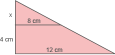

Introdução à unidade
Nesta unidade, são apresentados os conceitos de figuras semelhantes, com a retomada dos conceitos de razão e proporção. É visto o Teorema de Tales e estudada a semelhança de triângulos com os casos de semelhanças entre eles.
A seguir, relacionamos os objetivos que se pretende atingir ao estudar os conceitos desta unidade.
Capítulo 1 – Segmentos proporcionais
Objetivos:
Capítulo 2 – Figuras semelhantes
Objetivos:
Probabilidade e Estatística – Análise de notícias
Objetivo:
Orientações específicas
Na abertura desta unidade, temos representada a fotografia da fachada de uma casa, indicando a medida real da base de uma das janelas, e um desenho desta fachada com a indicação da medida utilizada para a mesma janela. Para que o desenho represente a fachada real da casa, é necessário que as medidas utilizadas sejam proporcionais às reais, isto é, que seja usada uma mesma razão para representá-las. Além disso, os ângulos deverão ser congruentes. Por exemplo, se um dos ângulos que formam o telhado for igual a 45° na medida real, este ângulo também deverá medir 45° na representação. Neste caso, a escala utilizada para construção do desenho foi de
7 : 1 000, ou seja, cada 7 cm do desenho correspondem a 1 000 cm do real. Como a base da janela mede 0,7 cm, então a base real mede 100 cm, ou seja, 1 m.
Aproveite a abertura da unidade para perguntar aos alunos a respeito da profissão que eles desejam exercer futuramente. Questione também se conhecem algum arquiteto ou engenheiro que desenvolve projetos, como do exemplo.
|
Principais habilidades da BNCC |
EF09MA04, EF09MA07, EF09MA08, EF09MA10, EF09MA14 |
|
Competências |
CE1, CE2, CG9 |
O conceito de proporcionalidade já foi apresentado em anos anteriores. Neste momento, fazemos uma retomada para então estudarmos o Teorema de Tales. Caso julgue necessário, retome as atividades do volume do 7.º ano e 8.° ano.
Na situação 2, apresentada no livro na página 57, podemos utilizar o conceito de proporção já vistos. Determinando a medida x do comprimento, temos:
10x = 15 ∙ 12
10x = 180
x = 18 cm
Para que essa ampliação seja proporcional, a medida de seu comprimento deve ser de 18 cm, pois a razão da foto original e a de sua ampliação devem ser as mesmas, ou seja:
A atividade proposta na situação 3 foi pensada de forma que fosse possível sua interpretação com fatos da realidade do ambiente escolar, podendo ser facilmente adaptada para outras situações. Um dos objetivos desse tipo de atividade é observar as potencialidades e as limitações que deveriam ser trabalhadas posteriormente para ter uma melhor aplicabilidade.
Encontre soluções
Atividade 2
Atividade 3
Perímetro desse triângulo: 3x
Soma das medidas dos ângulos internos de um quadrilátero: 360º
Atividade 5
5 ∙ 21 = 7 ∙ 15
105 = 105
Sim.
24 ∙ 4 ≠ 9 ∙ 12
96 ≠ 108
Não.
11 ∙ 161 = 23 ∙ 77
1 771 = 1 771
Sim.
35 ∙ 4 = 5 ∙ 28
140 = 140
Sim.
Atividade 6
5AC = 42
AC = 8,4 cm
Atividade 7
5x = 225
x = 45 m
A altura do outro prédio é
de 45 metros.
Atividade 8
2 400 : 40 = 60 cm
500 : 40 = 12,5 cm
As medidas deverão ser: 60 cm
para o fundo e 12,5 cm para a altura.
Atividade 9
15 : 5 = 3 cm
OQ = 2 ∙ 3 = 6 cm
QP = 3 ∙ 3 = 9 cm
Atividade 10
80 : 10 = 8 cm
3 ∙ 8 = 24 cm
O menor pedaço de arame mede 24 cm.
Teorema de Tales
Comente com os alunos que o Teorema de Tales possui diversas aplicações práticas, como por exemplo: descobrir a altura de um prédio, de uma casa, de uma árvore ou distâncias inacessíveis. Tales calculou a altura da pirâmide através da semelhança dos triângulos formados pela projeção das sombras da pirâmide e da vara, e com isso verificou que os dois triângulos apresentam ângulos respectivamente congruentes. No site https://cutt.ly/rLWXgf8 você poderá ver a demonstração do teorema, bem como, um pouco sobre a história de Tales de Mileto e suas medições.
Encontre soluções
Atividade 2

5x = 60
x = 12
3x = 30
x = 10
14y = 280
y = 20
5y = 38
y = 7,6
8x = 176
x = 22
20y = 450
y = 22,5
Atividade 3
36x = 32x + 4
4x = 4
x = 1 cm
DE = 8x + 1 = 8 + 1 = 9 cm
BC = 6x = 6 cm
DF = 9 + 6 = 15 cm
AC = 4 + 6 = 10 cm
Atividade 4
40x = 660
x = 16,5
NO = 16,5 cm
Atividade 5
8y = 4y + 20
4y = 20
y = 5 cm
AD = 5 cm; BD = 10 cm
Atividade 6
22x + 44 = 32x - 16
10x = 60
x = 6 cm
x + 2 = 6 + 2 = 8 cm
2x - 1 = 12 - 1 = 11 cm
Perímetro: 8 + 11 + 16 + 22 + 26 = 83 cm
14y = 9y + 18
5y = 18
y = 3,6 cm
5y + 2 = 18 + 2 = 20 cm
Perímetro: 3,6 + 9 + 14 + 20 + 5,6 = 52,2 cm
Atividade 7
34x = 816
x = 24 m
34y = 918
y = 27 m
As medidas da frente de cada um desses terrenos são 24 m e 27 m.
Atividade 8
Atividade 9
30 cm
x
18 cm
22 cm
|
Principais habilidades da BNCC |
EF09MA07, EF09MA12, EF06MA21 |
|
Competências |
CE1, CE2, CE6, CE7, CG5, CG9, CG10 |
Para o estudo de polígonos semelhantes, proponha aos alunos que construam polígonos em malhas quadriculadas ou triangulares. Em seguida, determine algumas razões para que as figuras sejam ampliadas ou reduzidas. Questione-os sobre o que eles observam em relação à medida dos segmentos e em relação à medida dos ângulos. Com o auxílio do transferidor, eles poderão comprovar que os ângulos correspondentes das figuras são congruentes.

Encontre soluções
Atividade 1
5x = 66
x = 13,2 cm
A medida do lado do quadrado ABCD é 13,2 cm.
Atividade 2
Perímetro M’N’O’P’: 60 cm
5x = 40
x = 8 cm
5y = 80
y = 16
Área = 8 ∙ 16 = 128 cm2
Atividade 4
Atividade 6
20x = 160
x = 8 cm
Atividade 7
A razão entre as medidas dos lados é igual a razão entre os perímetros.
4x = 24 ; x = 6 cm
4y = 30; y = 7,5 cm
4z = 36; z = 9 cm
4m = 42; m = 10,5 cm
4n = 48; n = 12 cm
Atividade 8
9b - 18 = 8b + 8
b = 26 cm
36x = 162
x = 4,5 cm
Perímetro: 9 + 8 + 4,5 = 21,5 cm.
Atividade 9
Perímetro ABC: 12 + 15 + 21 =
= 48 cm.
2x = 60
x = 30 cm
2y = 75
y = 37,5 cm
2z = 105
z = 52,5 cm
Os lados do triângulo PQR medem: PQ = 30 cm, PR = 37,5 cm e QR = 52,5 cm.
Homotetia
A razão de homotetia pode ainda ser menor que −1, ser igual a −1 ou estar compreendida entre 0 e −1. O que acontecerá com as figuras nesses casos?
Vamos verificar a construção de figuras geométricas planas usando essas razões.
► Construindo uma figura, com k = −2.
1.º Vamos marcar o ponto O, centro de homotetia, a uma distância qualquer da figura e traçarmos as retas que passam por O e pelos vértices do quadrilátero ABCD.
2.º Como k é negativo, vamos determinar A’ na semirreta oposta , de modo que OA’ = 2 ∙ OA. Para encontrar os demais vértices, procedemos da mesma maneira.
3.º Traçamos os lados do quadrilátero A’B’C’D’.
Observe que, quando k < −1, temos uma figura ampliada em relação à figura inicial e a homotetia é inversa.
► Construindo uma figura, com .
1.º Primeiro, marcamos o ponto O, centro de homotetia, a uma distância qualquer da figura e traçamos as retas que passam por O e pelos vértices do quadrilátero ABCD.
2.º Como k é negativo, vamos determinar A’ na semirreta oposta , de modo que OA’ =  . OA. Para encontrar os demais vértices, procedemos da mesma maneira.
. OA. Para encontrar os demais vértices, procedemos da mesma maneira.

3.º Com a ajuda de esquadros, vamos traçar os demais segmentos para encontrar o quadrilátero A’B’C’D’. A partir de A, traçamos um segmento paralelo a , encontrando o ponto B’ na semirreta oposta a . A partir de B’, traçamos um segmento paralelo a  , encontrando o ponto C’ na semirreta oposta a . Procedendo da mesma forma com os demais pontos, determinamos o quadrilátero A’B’C’D’.
, encontrando o ponto C’ na semirreta oposta a . Procedendo da mesma forma com os demais pontos, determinamos o quadrilátero A’B’C’D’.
► Construindo uma figura, com k = −1.
Quando a razão de homotetia é igual a −1, a figura obtida será congruente à figura dada, sendo a homotetia inversa. Observe:
Comente com os alunos que foi com Felix Klein (1849-1945) que a Geometria das Transformações teve início no campo da matemática.
Segundo Klein, há transformações do espaço que não alteram as propriedades geométricas das figuras. Em contrapartida, estas propriedades são, independentes da situação, ocupadas no espaço pela figura considerada, da sua grandeza absoluta, e também do sentido em que estão dispostas as suas partes. Os deslocamentos do espaço, as transformações por semelhança e por simetria não se alteram. Portanto, as propriedades das figuras, não alteram mais do que as transformações compostas pelas precedentes.
Klein designou por grupo principal de transformações no espaço, o conjunto de todas estas transformações: as propriedades geométricas não são alteradas pelas transformações do grupo principal. A recíproca é igualmente verdadeira: as propriedades geométricas são caracterizadas pela sua variância relativa às transformações do grupo principal. Com efeito, se considerarmos um instante, o espaço como não podendo deslocar-se, como uma multiplicidade fixa, cada figura possui uma individualidade; propriedades que ela possui como indivíduo, apenas aquelas em que as transformações do grupo principal não alteram, são propriamente geométricas.
KLEIN, F. O programa de Erlangen. In: FERNANDES, N. C. (trad.) O programa de Erlangen de Félix Klein: considerações comparativas sobre as pesquisas geométricas modernas. São Paulo: IFUSP, 1984.
Encontre soluções
Atividade 1
Atividade 2
Encontre soluções
Atividade 2
16x = 272
x = 17 m
O edifício tem 17 metros de altura.
Atividade 3
x = 15
y = 22,5
Resposta:
10,5 cm, 15 cm e 22,5 cm.
Atividade 4
Perímetro: 12 + 16 + 20 = 48 cm.
2x = 36; x = 18 cm
2y = 48; y = 24 cm
2z = 60; z = 30 cm
Atividade 5
8AB = 72
AB = 9 cm
Atividade 6
4x = 1,6x + 4,8
2,4x = 4,8
x = 2 m
O tamanho de sua sombra é de 2 m.
Atividade 7

Atividade 8
Atividade 9
Razão de semelhança:
Perímetro do triângulo dado: 7 + 9 + 14 = 30
Perímetro do triângulo de lado 21 dm:
Atividade 10
AC = 16,8 cm
14DC = 60 + 10DC
4DC = 60
DC = 15 cm
Atividade 11
Atividade 12
10NP = 108
NP = 10,8 cm
MP = 18 - 10,8 = 7,2 cm
Atividade 13
18x = 180
x = 10
Probabilidade e estatística – Análise de notícia
Aproveite o tema para questionar os alunos sobre como seus familiares realizavam pesquisas antes do surgimento e a popularização da internet. Solicite que façam um levantamento com os familiares, vizinhos — de preferência pessoas que estudaram antes da década de 90. Essa informação pode ajudar o aluno a compreender que hoje em dia temos acesso à informação de maneira mais rápida que antigamente. As pessoas precisavam ir ao centro ou até em outras cidades, para ter acesso a uma biblioteca, fato que está cada vez mais distante da realidade dos brasileiros, mas que ainda pode ocorrer. Hoje em dia, muitas famílias não possuem um computador ou internet em casa, outras acessam apenas na escola ou em outros estabelecimentos. Questione também se as pessoas idosas de suas famílias ou conhecidos são usuários da internet e se eles costumam auxiliar no uso de plataformas e aplicativos. Esse assunto pode trazer outros questionamentos a respeito da valorização e respeito aos idosos e dos avanços da tecnologia.
Relembre
Atividade 1
18 : 9 = 2 cm
AM = 2 ∙ 2 = 4 cm
MB = 2 ∙ 7 = 14 cm
Atividade 2
Atividade 3
81x = 72x + 18
9x = 18
x = 2
Atividade 4
20x = 900
x = 45 m
Atividade 5
75x = 3 000
x = 40
Atividade 6
5y = 280
y = 56
5x = 140
x = 28
Atividade 7
2PA’ = 12
PA’= 6 cm
Atividade 8
2x = 12 - 6x
8x = 12
x = 1,5 cm
Atividade 9
Atividade 10
6PR = 36
PR = 6
Atividade 11
16 + 4ED = 20
4ED = 20 - 16
4ED = 4
ED = 1 cm
5AB = 24
AB = 4,8 cm
BC = 6 - 4,8 = 1,2 cm
Perímetro: 1,2 + 4 + 5 + 1 = 11,2 cm
Atividade 12
Temos que NM = MQ = QP =
= PN = x,
NT = 12 - x e QS = 6 - x
Por semelhança:
Como QP = PN, temos:
Atividade 13
5a = 20
a = 4
b = 3
AB = a + z
12 = 4 + z
z = 8
y = 6
z + y = 8 + 6 = 14
Atividade 14
Atividade 15
Atividade 16
Atividade 17